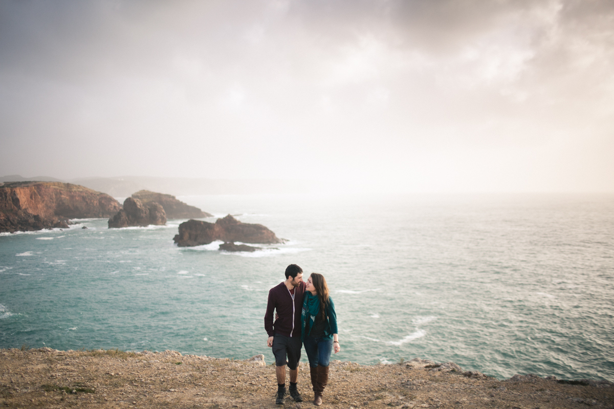
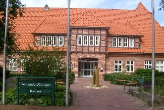
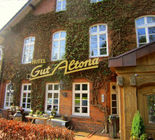

Unsere Feier
... und alles was ihr dazu wissen müsst!
wir freuen uns, mit euch ganz bald unsere Hochzeit feiern zu können.
Damit ihr auch alle genau wisst, wie der Ablauf unsere Feier ist, haben wir euch hier ein paar wichtige Informationen zusammen gestellt.
Scrollt einfach runter und wir werden euch alles genau erklären!

Um 11 Uhr treffen wir uns am Standesamt Dötlingen in Neerstedt. Dort werden wir dann um 11.30 Uhr die standesamtliche Trauung beginnen.
Beim Standesamt gibt es einige Parkplätze. Wir bitten euch auszuweichen auf die umliegenden Seitenstraßen, falls keine Parkplätze mehr vorhanden sein sollten.

Um 14.30 Uhr bitten wir euch, zur Kirche in Dötlingen zu kommen, um mit uns die kirchliche Trauung zu feiern.
Bitte plant genug Zeit ein, um dorthin zu kommen und zu parken. Es gibt einige Parkplätze direkt an der Kirche, ansonsten bitten wir euch auf die Seitenstraßen auszuweichen.

Nach der kirchlichen Trauung werden wir alle zusammen zum Gasthof Gut Altona fahren, wo wir einen schönen Abend verbringen werden.
Ab 18.30 Uhr werden wir dort mit dem Essen beginnen, allerdings hoffen wir mit allen vorher einige schöne Momente beim Empfang draußen am Gasthof zu verleben.

Weitere Infos...
Dresscode: Wir bitten um legere Abendmode, mit der ihr ordentlich das Tanzbein schwingen könnt.
Geschenkewunsch: Da wir gerade in der Planung für eine Renovierung sind, würden wir uns sehr über finanzielle Unterstützung hierzu freuen.
Wir freuen uns schon sehr, euch auf unserer Feier begrüßen zu können!
Bei weiteren Fragen kontaktiert bitte: brautpaar@brautpaar.de
Eure Julia & Tim